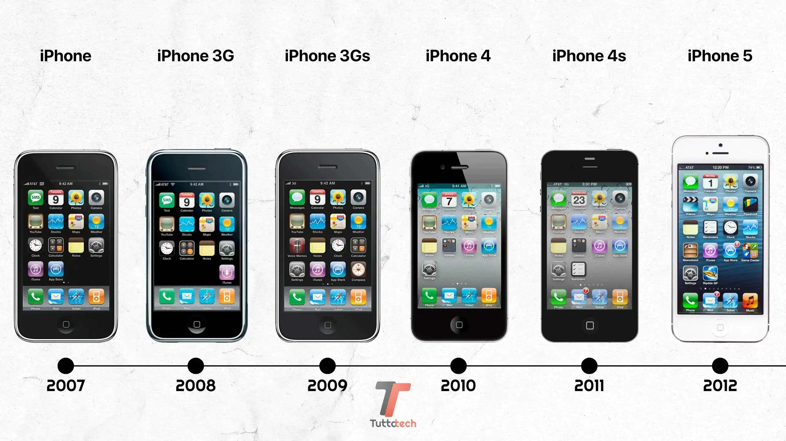

Cosa sono i rifiuti RAEE?
viviamo circondati di tecnologia. Telefoni, cuffie, caricabatterie, elettrodomestici. li usiamo ogni giorno e spesso, quando si rompono o diventano "vecchi", li buttiamo senza pensarci troppo e senza prendere in considerazione l'idea di ripararli. Il problema è che buttarli nel modo sbagliato causano dei danni all'ambiente. I RAEE sono i Rifiuti da Apparecchiature Elettriche ed Elettroniche, cioè tutto quello che funziona a corrente o a batterie. Non solo apparecchi di grandi dimensioni come il frigorifero o la lavatrice, ma anche il tuo vecchio smartphone, le cuffie rotte o il tostapane che non scalda più. Il punto è che dentro questi oggetti ci sono due tipi di cose: materiali che si possono recuperare, (come il rame) e sostanze che invece sono pericolose per l'ambiente. Se li butti nell'indifferenziata o peggio ancora li abbandoni, queste sostanze finiscono nel terreno e nell'acqua. Per questo esiste un sistema specifico per smaltirli. La quantità di rifiuti elettronici aumenta ogni anno, perché i telefoni diventano obsoleti in due anni, escono modelli nuovi ogni cinque minuti e la gente cambia dispositivi continuamente. Quindi il problema è destinato a crescere. Insomma, capire cosa sono i RAEE è il primo passo. Poi basta poco: smaltire correttamente un vecchio telefono non è complicato, ma fa davvero la differenza.
